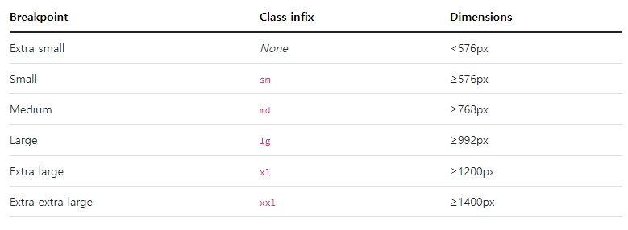

02 부트스트랩- 그리드레이아웃(반응형)
부트스트랩은 하나의 행에 반드시 12개의 열(컬럼)을 사용해야 한다.
만약 12개의 열(컬럼)을 모두 사용하지 않으려면, 더 넓은 열을 만들기 위해 열들을 하나의 그룹으로 만들어 사용할 수 있다.
그리드 시스템에서는 화면의 너비별 4개의 클래스를 가지고 있다.

- xl : 스마트폰용, 화면의 넓이가 768이하 일 때
- sm : 태블릿용, 화면의 넓이가 768보다 크거나 같을 때
- md : 큰 태블릿용, 작은 노트북용, 화면의 넓이가 992보다 크거나 같을 때
- lg : 일반 노트북, 데스크탑 pc, 화면의 넓이가 1200보다 크거나 같을 때
그리드 레이아웃 실습
12컬럼을 4개씩 병합 배치
12컬럼을 4개씩 병합 배치
12컬럼을 4개씩 병합 배치
12컬럼을 6개씩 병합 배치
12컬럼을 6개씩 병합 배치